Charlie Gauthier
charlie.gauthier@umontreal.ca
20105623
Mathieu Perron
mathieu.perron.1@umontreal.ca
20076170
Tâche 1: Analyse
- On informatise la gestion des rapports, raisons et conséquences des paiements.
- Les données seront stockées sur l’ordinateur exécutant GYM. il devra être accessibles externellement pour que RnB puisse faire sa procédure chaque soir.
- Il devra avoir des ports accessibles, avoir un disque dur rapide et fiable.
- #GYM interagit directement avec RnB par son port et indirectement avec les logiciels des banques des clients par TEF.
- L’agent interagit toujours avec le système pour les entités.
On a deux autres utilisateurs:
- le temps qui lance la procédure qui crée les TEF et le rapport de services des professionnels.
- RnB qui interagit avec les données sur disque, donc pas avec le logiciel.
Tâche 2: Diagramme d'activité UML
Activité principale:

Procédure comptable :

ajouter/modifier/supprimer membre:
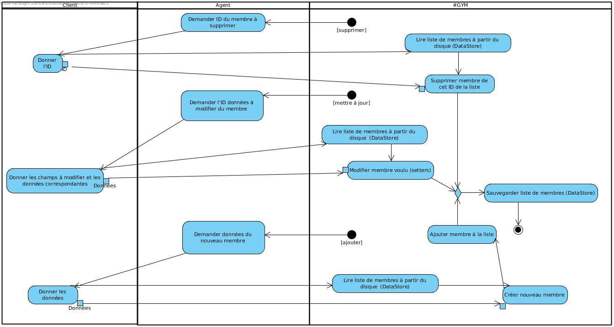
ajouter/modifier/supprimer séance:
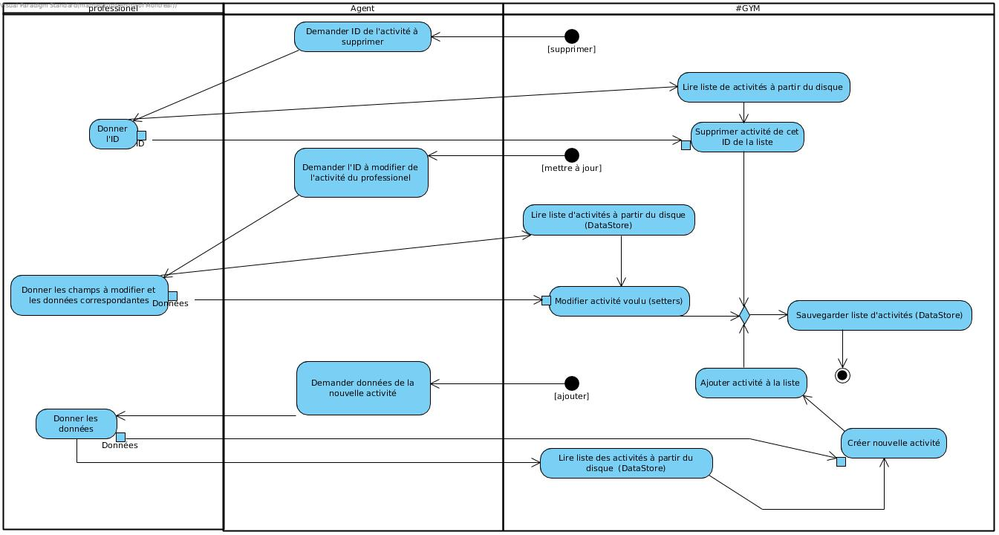
Confirmer Présence:
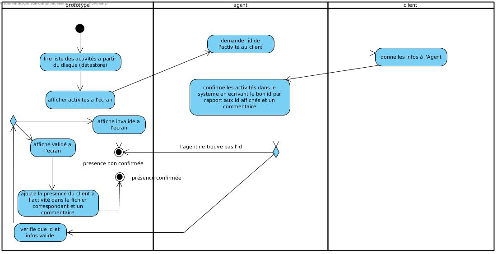
Inscrire Membre a une séance:
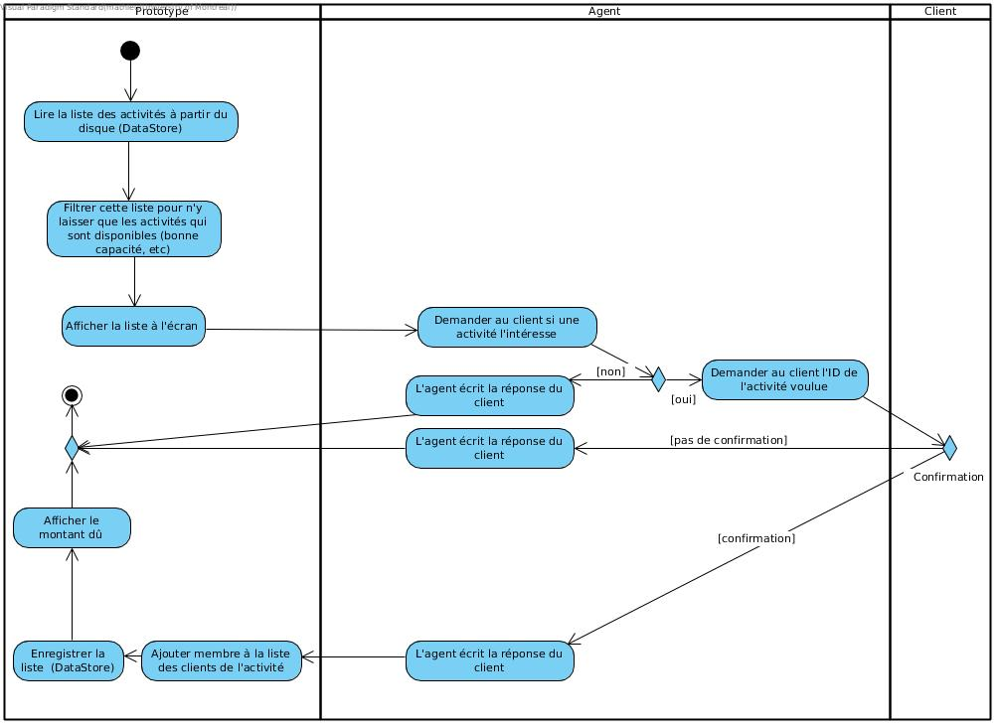
Tâche 2: Diagramme de classe UML
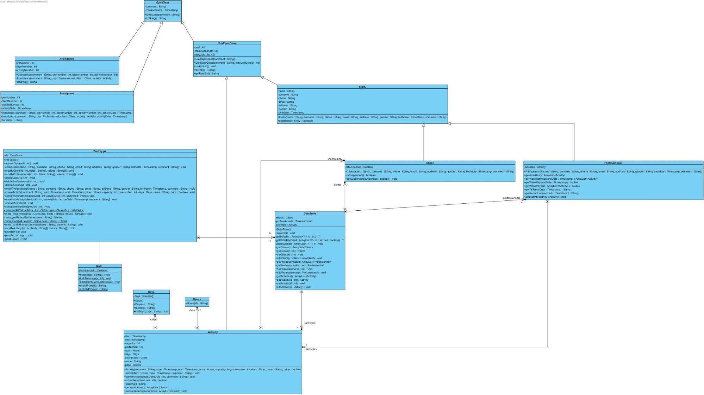
Tâche 3: Diagrammes de séquence UML
Confirmer présence d’un membre à une séance:

Créer/modifier/supprimer une activité:
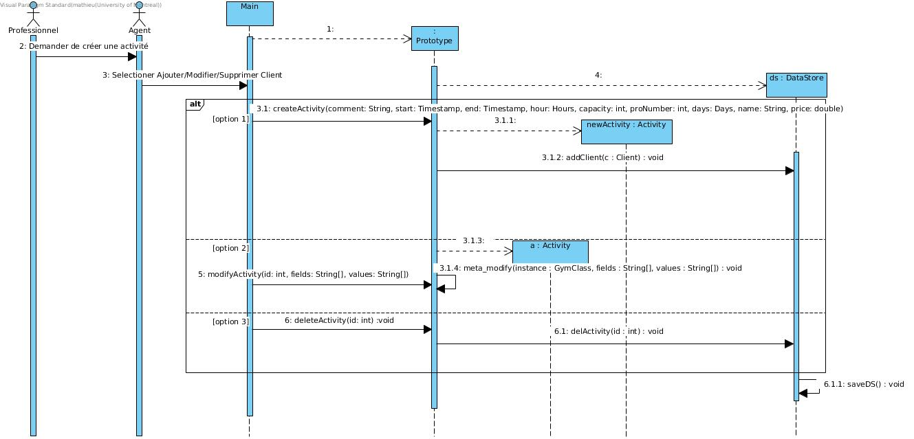
Inscrire un membre a une séance/activité:
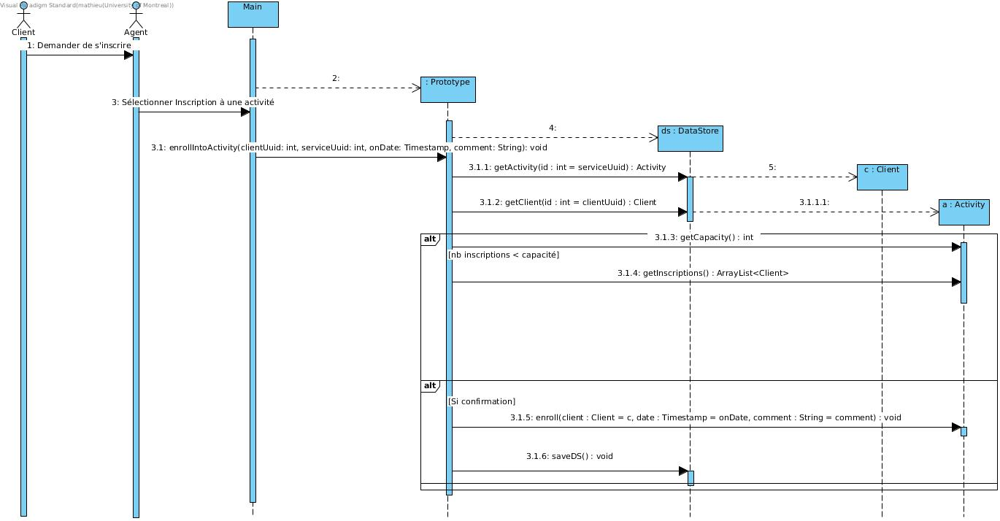
ajouter/modifier/supprimer un client:

Procédure Comptable:
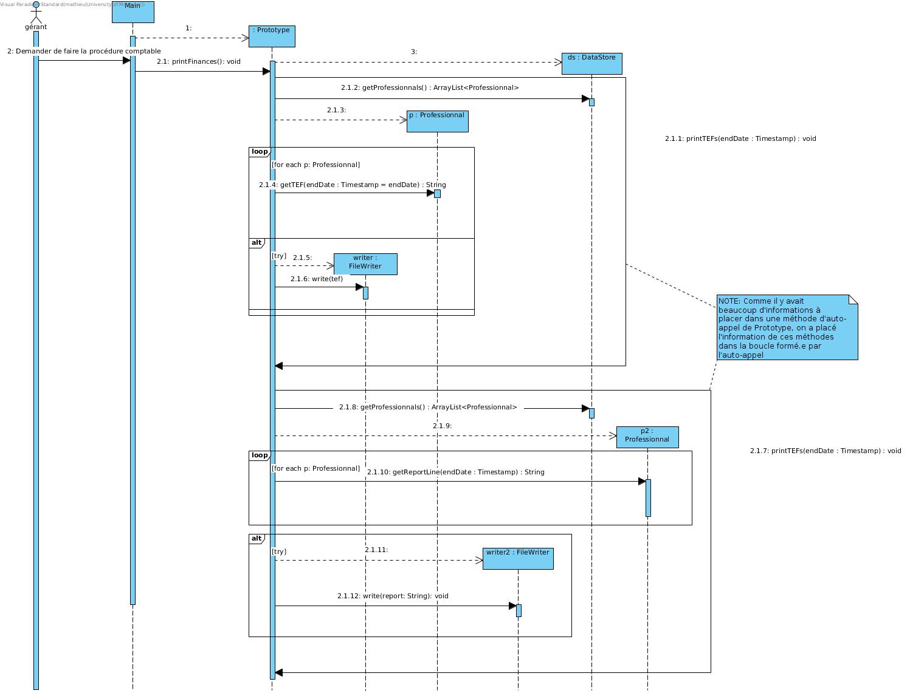
Tâche 5 : Évolution du prototype
NOTES:
- Le prototype assume que vous ne ferez pas rouler le code un vendredi à minuit. Autrement dit, une option pour faire la procédure comptable a été ajoutée à l’interface même si normalement elle n’y serait pas accessible par un humain.
- La mise sur disque du prototype est fonctionnelle :) Cependant, ça reste un prototype, et comme les ID uniques sont gérés par un int statique, on perd le sens des ID lorsqu’on reprend la sérialisation des instances en mémoire. Deux choses peuvent donc avoir le même ID si vous
- Créez une instance ayant un ID.
- Fermez le programme.
- Rouvrez le programme.
- Créez une autre instance de même type.
- Les fichiers source .java sont placés directement dans le .jar remis. De cette façon, le présent rapport ne sera pas pollué par une tonne de liens vers les .java (validé par Mr. Syriani).
- Le calcul des salaires des professionnels est un peu bête pour l’instant:
- On assume qu’ils sont payés peu importe si un client participe à l’activité ou pas, dès qu’on a passé un jour lors duquel l’activité est donné.
- On assume aussi que les clients paient le plein prix de l’activité à chaque fois.
- Cependant, la procédure fait bien le calcul de jours adéquat. Il s’agirait seulement de changer le calcul pour prendre en compte les activités avec aucune inscriptions et d’une meilleure politique de salaire dans une prochaine itération.
- Les TEFs sont en format “NAME: x. NUMBER: x. PAY: x”
- Le rapport est en format .tsv “Name Number Pay”. N’ayant pas de vrai administrateur, nous n’envoyons pas le rapport à l’administrateur directement. Pour fins de démonstration, il se fait créer directement dans le répertoire duquel est parti le .jar.
Statistiques
Tâche | Charlie | Mathieu |
1. Analyse | 50% | 50% |
2. Diagramme d'activité UML | 50% | 50% |
3. Diagramme de classe UML | 60% | 40% |
4. Diagrammes de séquence UML | 45% | 55% |
5. Évolution du prototype | 55% | 45% |
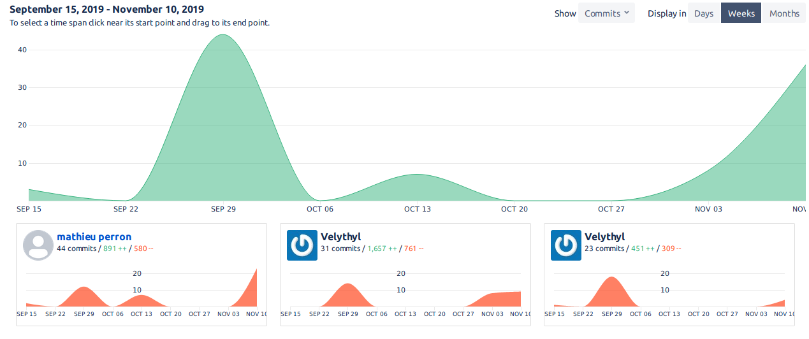
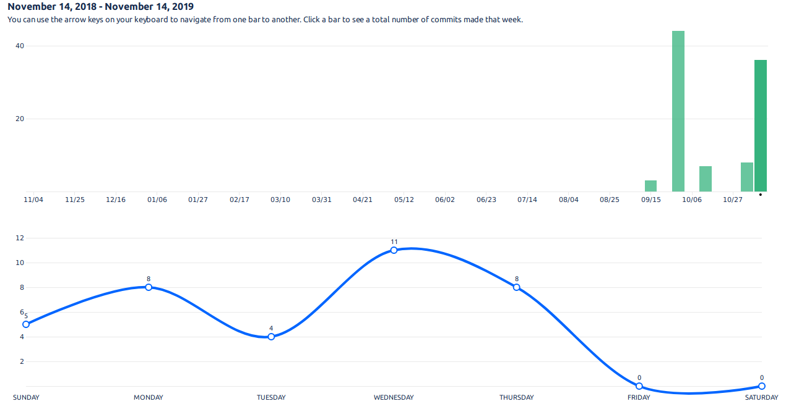
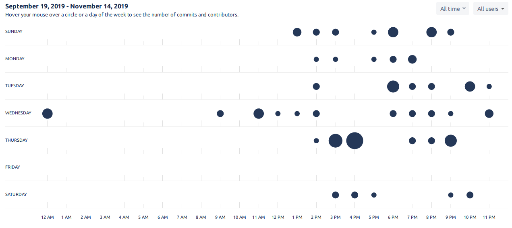